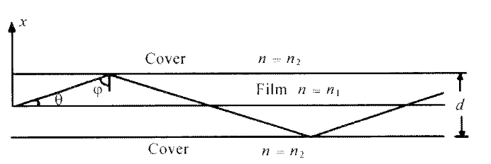
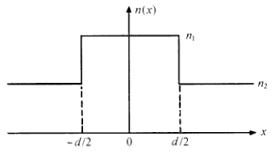

A symmetric planar (slab) waveguide consists of a film (core) of thickness \(d\) and refractive index \(n_1\), bounded by cladding of refractive index \(n_2\), with \(n_1>n_2\).

Propagation is along the \(z\)-direction with propagation constant \(\beta\). For time-harmonic fields, assume
\[ E_y(x,z,t)=E_y(x)\,e^{i(\beta z-\omega t)}. \]For TE modes (with respect to the direction of propagation \(z\)):
\[ E_z=0,\qquad E_y\neq 0. \]The associated magnetic-field components follow from Maxwell’s equations:
\[ H_x=-\frac{\beta}{\omega\mu_0}\,E_y, \qquad H_z=\frac{i}{\omega\mu_0}\,\frac{dE_y}{dx}. \]Substitution into Maxwell's equations yields the scalar wave equation for \(E_y(x)\):
\[ \frac{d^2E_y}{dx^2}+\left(k_0^2 n^2(x)-\beta^2\right)E_y=0, \qquad k_0=\frac{\omega}{c}. \]For guided modes the field must be oscillatory in the core and evanescent in the cladding. Hence
\[ k_0 n_2< \beta< k_0 n_1, \qquad\text{or}\qquad n_2< \frac{\beta}{k_0}< n_1. \]Physical boundedness requires an exponential decay away from the film:
\[ E_y(x)= \begin{cases} C\,e^{-\gamma(x-d/2)}, & x>\dfrac{d}{2},\\[6pt] C\,e^{+\gamma(x+d/2)}, & x<-\dfrac{d}{2}. \end{cases} \]Since \(n(x)=n(-x)\), modes can be classified by parity:
Thus one may take:
\[ \text{Even:}\quad E_y(x)=A\cos(\kappa x), \qquad \text{Odd:}\quad E_y(x)=B\sin(\kappa x), \quad (|x| < d/2). \]At the interfaces \(x=\pm d/2\), tangential field components must be continuous. For TE modes this gives:
Applying the boundary conditions yields the TE mode eigenvalue equations:
Only discrete values of \(\beta\) satisfy these transcendental equations; each allowed \(\beta\) corresponds to one guided TE mode.
The normalized frequency (or \(V\)-parameter) is defined by
\[ V=k_0 d\sqrt{n_1^2-n_2^2}. \]where, \(k_0 = \frac{2\pi}{\lambda}\).
\(V\) governs the number of guided modes supported by the slab.